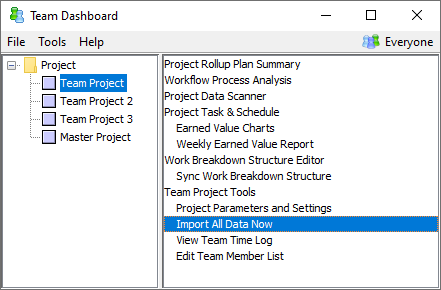
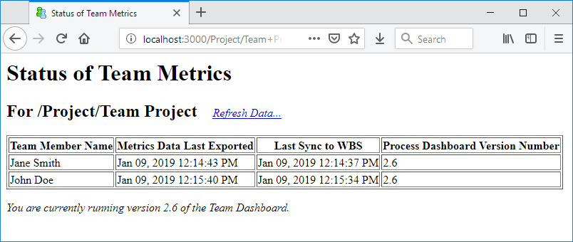

Once each team member has created their individual plan using the steps above, you can view the consolidated team plan.
In the Team Dashboard, select the team project from the tree on the left. Then select Import All Data Now from the list on the right.

Then return to the Team Dashboard window and select Team Project Tools from the list on the right.

On that page, click the Show Status of Team Member Metrics button. A table will be displayed, showing each team member who has joined the project, along with the date and time when they last exported their personal metrics.

Review this information carefully. If any team member is not listed, that person has not joined the team project. If their timestamp is old, they have not yet copied their tasks from the team Work Breakdown Structure. Communicate with team members as necessary, and help them to resolve any problems they might be having. To recheck for new data, click the Refresh Data hyperlink.
When it appears that all team members have successfully created their personal plans, return to the Team Dashboard and select Project Task & Schedule from the list on the right. The task list for this project will be displayed, and should include an entry for each member of the team. Review this list to ensure that everything appears correct:
After working with individuals to fix any of these problems, you must close and reopen the Task & Schedule window to refresh the data.
When the team is satisfied with the bottom up plan, it is a good idea to save a baseline. In the Task & Schedule window, choose "Tools → Save Baseline." This will enable your team to see how the plan changes in the future.
You can view the bottom-up earned value plan for the project by clicking the Report button on the Task and Schedule window.
To view the entire project plan, switch to the Team Dashboard window and select the "Rollup Plan Summary" option from the list on the right. The rollup plan summary will appear in your Web browser.
This plan summary form will display the customized forms and reports that were created earlier. For more information on the content and customization of this form, see the Creating / Customizing Process Forms and Reports help topic.
You can drill down into the subcomponents of your team plan by
clicking on the ( ) icon.
) icon.